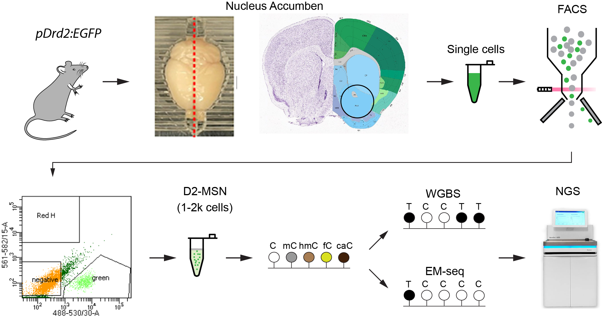
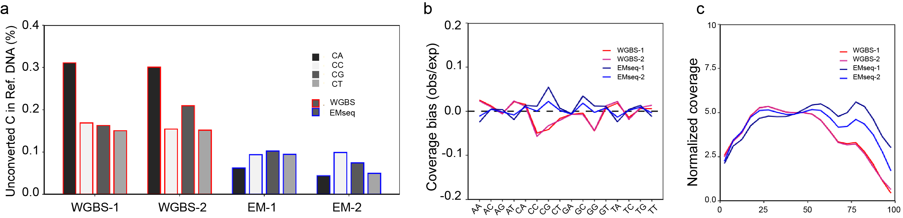
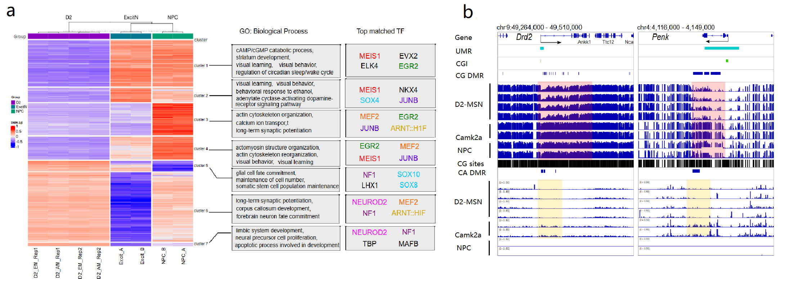

Whole genome methylation profiling of rare neuronal subtype by Bisulphite-Sequencing and Enzymatic Methyl-Sequencing
{kind=link}
We have developed two protocols to comprehensively profile the rare neuronal population from individual mouse brains. One is based on bisulfite treatment for whole-genome bisulfite sequencing (WGBS), and the other utilizes Enzymatic Methyl-Sequencing (EMseq from New England Biolabs). We profiled the DNA methylation of Drd2-expressing neurons in the nucleus accumbens, which is an important brain region for reward processing and addiction.
Distinct bias between WGBS and EMseq
{kind=link}
Our data show that WGBS and EMseq have distinct biases regarding unconverted cytosine and sequencing coverage, among other factors. These differences may originate from the distinct chemistry between these two methods. More CA dinucleotides were unconverted by bisulfite treatment, while CC and CG showed higher unconversion rates in EMseq data (a), which might be due to the lower accessibility of enzymes to GC-rich DNA strands. Likewise, WGBS is more likely to yield lower coverage in GC-rich regions (b,c). Although EMseq shows less systemic bias compared to WGBS, the biases of EMseq are not consistent across replicates. In other words, WGBS shows higher biases in several metrics, such as higher unconversion rates and lower coverage of high GC regions; however, EMseq shows greater variation between replicates.
D2-MSN specific DNA methylation landscape
{kind=link}
We also analyzed cell type-specific differentially methylated regions (DMRs) by comparing D2-MSN to neural progenitor cells and Camk2a-expressing neurons from the mouse cortex. We pinpointed the transcription factors that might interact with the D2-MSN DMRs (a). We found that the cell identity genes, such as the dopamine receptor Drd2 and the opioid enkephalin preproprotein gene Penk, exhibit concurrent low CG and non-CG methylation (b). Taken together, this study provides insights into both DNA profiling and neuroepigenomics in addiction.